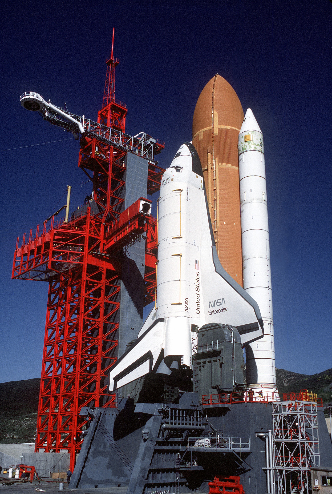
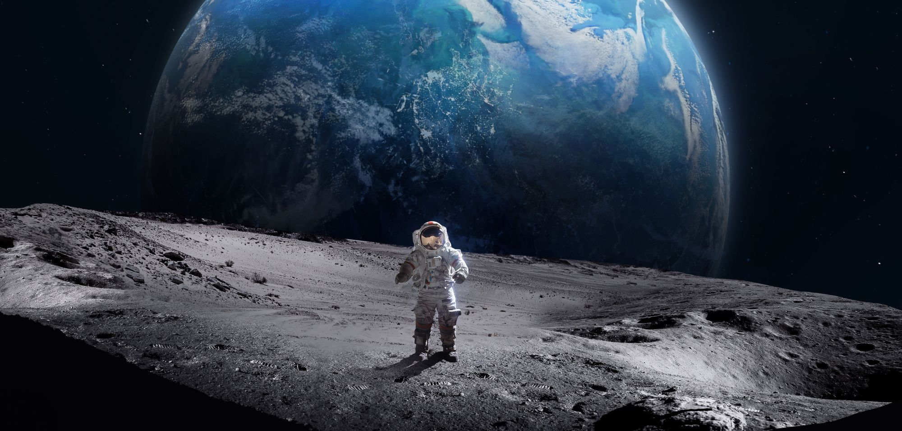

Die Raumschiffe sind so super! Stellt euch vor ihr würdet auf dem Mond landen. Wäre das nicht toll? Aber bevor wir landen oder überhaupt starten müssen wir berechnen wie viel die Geschwindigkeit beträgt,die höhe der Rakete und der gesamte Treibstoff. All das muss man berechnen .Die Astronauten müssen auch bevor sie starten einen sogenanten Test bestehen.
Im diesen sogenanten Test müssen die neuen Astronauten folgendes haben:Müssen ein Abschluss haben. und In Physik,Biologie,Chemie und in Mathematik gute Noten haben. Mann muss eine Flugerfahrung als Pilot:in zeigen sowie Ingenieurwissenschaft oder in Medizin vorweisen.
Wie kann ein Raumschiff im Weltall seine Geschwindigkeit ändern?
Weil im Weltall Vakuum herscht,gibt es im Prinzip nur eine Möglichkeit, sich fortzubewegen:das Rückstoßprinzip.Es wirkt bei Luftballons genauso wie Raketen: Pustet man den Ballon und lässt ihn los, so strömt die Luft mit Tempo aus der Öffnung heraus.
Als Raumschiffe oder Raumfahrzeuge werden im Allgemeinen alle Fahrzeuge bezeichnet, die zur Fortbewegung im Weltraum (Raumfahrt) geschaffen wurden. Teile dieser Raumschiffe, die über eine Atmosphäre im Inneren verfügen, und die nicht mit aerodynamischen Steuerelementen für den Eintritt in eine Atmosphäre vorgesehen sind, werden auch Raumkapsel genannt. Was heißt Nasa: die Weltraumbehörde der USA. Nasa ist eine Abkürzung und steht für National Aeronautics and Space Administration (sprich: näschnäl äonotiks änd späis ädministräischn), das ist der englische Ausdruck für „nationale Aeronautik- und Raumfahrtbehörde“. Aeronautik ist ein anderes Wort für Luftfahrt.
 Normalerweise bleiben Raumfahrende in der Rückkehrkapsel, bis sie den Erdboden erreicht. Diese Kapsel dringt
zunächst aus dem Weltraum in die immer dichter werdenden Luftschichten der Erde ein und wird dadurch
abgebremst. Dann öffnen sich große Fallschirme, an denen die Kapsel selbst zum Boden schwebt.
Normalerweise bleiben Raumfahrende in der Rückkehrkapsel, bis sie den Erdboden erreicht. Diese Kapsel dringt
zunächst aus dem Weltraum in die immer dichter werdenden Luftschichten der Erde ein und wird dadurch
abgebremst. Dann öffnen sich große Fallschirme, an denen die Kapsel selbst zum Boden schwebt.
Wir hoffen diese Webseite hilft euch mehr über die Nasa zu wissen lassen. Meiner Meinung nach werden wir weitere Webseiten machen schaut gerne vorbei schönen Tag noch!!!